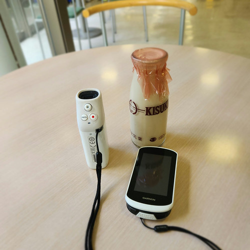
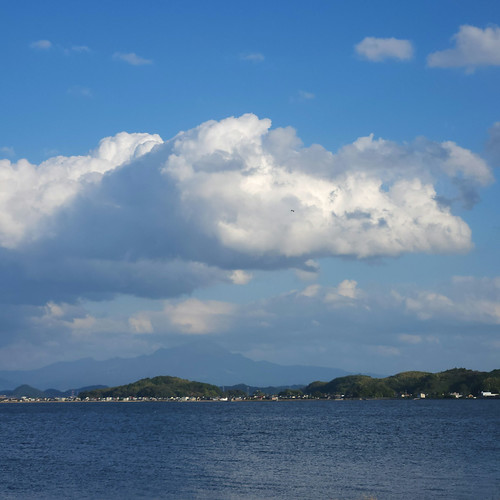
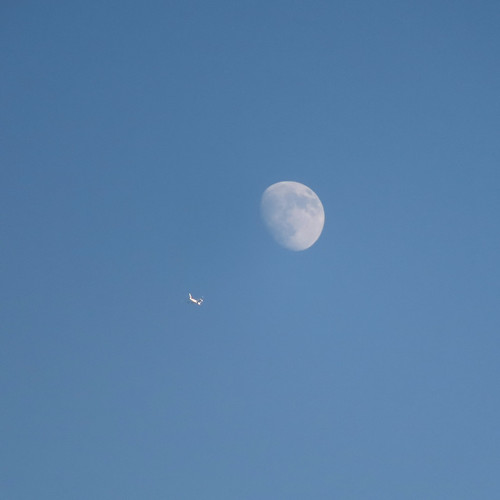

豆名月（十三夜，季秋の名月？）

11月初っ端の三連休。 いかがお過ごしでしょうか。
松江は天気が微妙でなかなか遊びに出掛けられないのだが，今日の午後は天気が良さそうなので，とりあえず八雲温泉へ。

木次乳業さん，いつもお世話になっています。
時間が中途半端なので，中海の意東海岸まで行って帰るお散歩コース。

おー。 雲が多いので無理かと思ったが，大山が見えてる。
帰り道。 ふと見上げたら月に向かって飛行機が飛んでるように見える。 慌ててシャッターを切った。

そういえば今日は十三夜（新月（朔）の日を
旧暦八月の十五夜の月が「中秋の名月」なんだから，旧暦九月の十三夜の月は「季秋の名月」とか呼んだりしないのだろうか。 聞いたことないけど（笑）
ちなみに今度の満月（2025-11-05）は2025年で最も地球に近い満月らしい。 俗に言う「スーパームーン1」というやつやね。 晴れるといいですねぇ。
さらに 2025-11-07 は立冬。 伝統的季節の節月区切りでは立冬から立春までが冬になる。 なお，天文学的季節では冬至から春分までが冬らしい。
ブックマーク
参考

- Canon コンパクトデジタルカメラ PowerShot ZOOM 写真と動画が撮れる望遠鏡 PSZOOM
- キヤノン (Release 2020-12-10)
- エレクトロニクス
- B08L4WKDZ7 (ASIN), 4549292179675 (EAN)
- 評価
望遠鏡型コンパクトデジカメ。メモリと充電器（要 Power Delivery）は別に用意する必要がある。使い勝手はまぁまぁ。

- GARMIN(ガーミン)Edge Explore 2 Power サイクルコンピューター【日本正規品】
- ガーミン(GARMIN) (Release 2022-09-22)
- スポーツ用品
- B0BD7FGVR6 (ASIN), 0753759310660 (EAN), 753759310660 (UPC)
- 評価
Garmin 製のルート探索・ナビゲーション特化のサイコン。タッチパネル助かる。充電ポートは USB-C (not PD)。また別売りの変換ケーブルを使いモバイルバッテリからパワーマウント経由で給電することもできる。ライドタイプが「ロード」「屋内」「グラベル」の3種類しかない。 Live Segment 非対応。

- 天文年鑑 2025年版
- 天文年鑑編集委員会 (編集)
- 誠文堂新光社 2024-12-05 (Release 2024-12-05)
- 単行本
- 4416723660 (ASIN), 9784416723661 (EAN), 4416723660 (ISBN)
- 評価
天文ファン必携。2025年版。これが届くと年末って感じ。

- 天体物理学
- Arnab Rai Choudhuri (著), 森 正樹 (翻訳)
- 森北出版 2019-05-28
- 単行本
- 4627275110 (ASIN), 9784627275119 (EAN), 4627275110 (ISBN)
- 評価
興味本位で買うにはちょっとビビる値段なので図書館で借りて読んでいたが，やっぱり手元に置いておきたいのでエイヤで買った。まえがきによると，この手のタイプの教科書はあまりないらしい。内容は非常に堅実で分かりやすい。理系の学部生レベルなら問題なく読めるかな。

- アワータイムイエロー
- ReGLOSS (メインアーティスト)
- hololive RECORDS 2025-09-14 (Release 2025-09-14)
- MP3 ダウンロード
- B0FNVV83KN (ASIN)
- 評価

- 落噺 (儒烏風亭らでん SOLO)
- ReGLOSS (メインアーティスト)
- cover corp. 2025-08-03 (Release 2025-08-03)
- MP3 ダウンロード
- B0FKB9Y1GL (ASIN)
- 評価
「おとしばなし」と読むらしい。語るように歌い，歌うように語る。「儒烏風亭らでん」らしい秀逸な作品。 mora で高解像度版が買える。